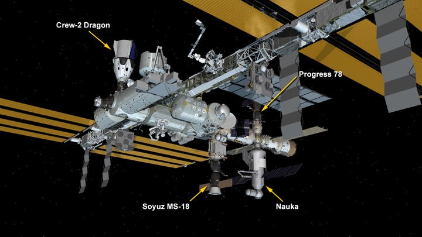

ယခုအခါ နာဆာမှ တာဝန်ရှိသူတွေရဲ့ စုံစမ်းစစ်ဆေးချက်အရ အာကာသ စခန်းကြီးဟာ ၄၅ ဒီဂရီ တိမ်းစောင်းသွားတာ မဟုတ်ပဲ ၅၄၀ ဒီဂရီ (တစ်ပါတ်ခွဲ တိတိ) ဂျွမ်းပစ်သွားတာ ဖြစ်တယ်ဆိုတာ ရှာဖွေတွေ့ရှိခဲ့ပါတယ်။ မူလက အချက်အလက်တွေအရ ၄၅ ဒီဂရီပဲ တိမ်းစောင်းတယ်လို့ ယူဆခဲ့ကြပေမယ့် ယာဉ်ရဲ့ လှုပ်ရှားမှုကို တိုင်းတာတဲ့ အာရုံခံ ကိရိယာတွေရဲ့ မှတ်တမ်းတွေကို ပြန်လည် စိစစ်ကြည့်ရာမှာ တကယ်က ၅၄၀ ဒီဂရီ တိတိ တစ်ပါတ်ခွဲ လည်ထွက်သွားတယ် ဆိုတာ ရှာဖွေတွေ့ရှိခဲ့တာပဲ ဖြစ်ပါတယ်။ အာကာသ စခန်းကြီး ဂျွမ်းထိုးတာ ရပ်သွားချိန်မှာတော့ စခန်းကြီးဟာ လုံးဝ ဇောက်ထိုးကြီး ဖြစ်နေခဲ့တာပါ။ မူလနေရာကို ပြန်ရောက်ဖို့ ရှေ့ဖက်ကို ၁၈၀ ဒီဂရီ တိတိ ပြန်ပြီး ဂျွမ်းပစ်ခဲ့ရပါတယ် လို့ နာဆာ တာဝန်ရှိသူက ပြောကြားပါတယ်။
နာဆာရဲ့ ထုတ်ပြန်ချက်မှာ မူလက မှားယွင်းထုတ်ပြန်ခဲ့တဲ့ ၄၅ ဒီဂရီ ဆိုတာနဲ့ ပါတ်သက်လို့ “ဒီအချက်က ဖြစ်စဉ် ဖြစ်နေတဲ့ အချိန်မှာ ရရှိတဲ့အချက်တွေကို မူတည်ပြီး ကြေငြာခဲ့တာ ဖြစ်ပါတယ်” လို့ ရှင်းပြထားပါတယ်။ “အဲ့သည် အချိန်မှာ နော်ကာ သုတေသနယာဉ်က ဒုံးစက်တွေ ဆက်ပြီး နိုးနေတုန်းပဲ ဖြစ်ပါတယ်။ ဒါ့ကြောင့် အာကာသ စခန်းကြီးကလဲ ဆက်ပြီး ဂြွမ်းထိုးနေတုန်းပါပဲ။ အခုပြေတဲ့ ၅၄၀ ဒီဂရီ ဆိုတာကတော့ ရရှိတဲ့ အချက်အလက်တွေ အားလုံးကို သေချာ စိစစ်ပြီးမှ တွေ့ရှိရတဲ့ ရလဒ် ဖြစ်ပါတယ်” လို့ ရှင်းပြခဲ့ပါတယ်။
ဒီဖြစ်စဉ် ဖြစ်ချိန်မှာ အာကာသ စခန်းပေါ်မှာ ယာဉ်မှူး ၇ ဦး ရှိနေခဲ့ပါတယ်။ ဒီယာဉ်မှူးတွေအတွက် အန္တရာယ် ဖြစ်နိုင်တဲ့ အခြေအနေ လုံးဝ မရှိခဲ့ပါဘူး လို့ နာဆာက အခိုင်အမာ ပြောကြားပါတယ်။ ဒါပေမယ့် Harvard-Smithsonian အဖွဲ့ကြီးက အာကာသ ရူပဗေဒ ပညာရှင် ဂျွန်နသန် မက်ဒူးဝဲလ် (astrophysicist Jonathan McDowell) ကတော့ ဒီဖြစ်စဉ်ဟာ အပြည်ပြည် ဆိုင်ရာ အာကာသ စခန်းကြီးရဲ့ သက်တမ်း ၂၄ နှစ် အတွင်းမှာ အတော်လေး ဆိုးရွားတဲ့ ဖြစ်စဉ် တစ်ခု ဖြစ်ပါတယ်လို့ သုံးသပ်ခဲ့ပါတယ်။ အခမသင့်ခဲ့ရင် အာကာသ စခန်းကြီးရဲ့ တည်နေရာကနေ ကမ္ဘာမြေပေါ် နိမ့်ကျလာပြီး စခန်းကြီး တစ်ခုလုံး တစ်စစီ ဖြစ်သွားနိုင်တဲ့ အန္တရာယ် ရှိပါတယ် လို့ သူက ပြောပါတယ်။
ဒီဖြစ်စဉ်ကို စတင် သတိပြုမိ သူက အာကာသ စခန်းယာဉ်ပေါ်က ယာဉ်မှူးတွေ မဟုတ်ကျပါဘူး။ အဲ့သည်အချိန်က နာဆာရဲ့ မြေပြင်ထိန်းချုပ်ရေး ဌာနမှာ တာဝန်ထမ်းဆောင်နေတဲ့ နာဆာရဲ့ ပျံသန်းရေး ဒါရိုက်တာ တစ်ဦးဖြစ်တဲ့ စကိုဗီး (Zebulon Scoville, NASA Flight Director) ပဲ ဖြစ်ပါတယ်။
“နေ့လယ် ၁၂ နာရီ ၃၄ မိနစ် အချိန်မှာ ISS ရဲ့ တည်နေရာပြ ဂျိုင်ရိုစကုပ် (gyroscopes) လေးခုက လာတဲ့ အချက်တွေ မှားယွင်းနေတယ် ဆိုတာ ကျွန်တော် သတိထားမိ ခဲ့ပါတယ်။ ပထမတော့ မှားပြီး တိုင်းမိတာလို့ပဲ ထင်မိခဲ့ပါတယ်။ ဒါပေမယ့် ဗီဒီယို မော်နီတာကို ကြည့်မိလိုက်တော့ နော်ကာရဲ့ ဒုံးစက်တွေ ပွင့်နေတာကို သွားတွေ့တော့တာပါပဲ။ တခါထဲ ခေါင်းနားပန်း ကြီးသွားတာ ပေါ့ဗျာ။”
ရုရှား သုတေသနယဉ် နော်ကာရဲ့ ဒုံးစက်တွေဟာ ပွင့်နေပြီး သူဆိုက်ကပ်ချတ်ဆက်ထားတဲ့ အာကာသ စခန်းယာဉ်ကနေ ဝေးရာကို ပြေးထွက်နိုင်ဖို့ ကြိုးစားနေပါတယ်။ ဒီတွန်းကန်အားက အာကာသ စခန်းကြီးကို တွန်းသလို ဖြစ်ပြီး ပတ်ခြာလည် သွားစေတာ ဖြစ်ပါတယ်။ ပိုဆိုးတာက ဒီဒုံးစက်တွေကို ဘယ်လိုမှ ရပ်ပစ်လို့ မရ ဖြစ်နေတာပါပဲ။ နော်ကာရဲ့ ဒုံးစက်တွေကို ရပ်ပစ်ဖို့ မြေပြင်က ရုရှား အာကသ ထိန်းချုပ်ရေး စခန်းကနေ ရပ်ပစ်မှပဲ ဖြစ်နိုင်မှာပါ။ ပြဿနာက အဲ့ဒီအချိန်မှာ အာကာသ စခန်းကြီးက ရုရှားရဲ့ တဖက်ခြမ်းကို ရောက်နေတဲ့အတွက် ရေဒီယို မမိပဲ ဖြစ်နေတာပဲ ဖြစ်ပါတယ်။ အာကာသ စခန်းကြီး ရုရှားနိုင်ငံ ပေါ်ကနေ ဖြတ်ပြန်ဖို့က နောက်ထပ် အချိန် မိနစ် ၇၀ ကြာအုံးမှာ ဖြစ်ပါတယ်။

ဒီဖြစ်စဉ် အတွင်းမှာ မြေပြင်နဲ့ နှစ်ကြိမ်တောင် အဆက်ပြတ် သွာခဲ့ပါတယ်။ ပထမ အကြိမ်က ၄ မိနစ် ကြာခဲ့ပြီး ဒုတိယ အကြိမ်က ၇ မိနစ်တောင်မှ ကြာခဲ့ပါတယ်။ အာကာသ စခန်းရဲ့ ကွန်ပြူတာကလဲ စခန်းကြီးရဲ့ ရေဒီယေတာနဲ့ လေရောင်ချည် ဒလက်တွေကို ပျက်စီးမှုက ကာကွယ်ဖို့ အလိုအလျောက် lock လုပ်ပစ်လိုက်ပါတယ်။
နော်ကာရဲ့ ဒုံးစက်တွေကို ပိတ်ပစ်ဖို့ ကြိုးစားတာ မအောင်မြင်တဲ့ အတွက် ရုရှား ထိန်းချုပ်ရေး အဖွဲ့တွေဟာ Zvezda Service Module ပေါ်က ဒုန်းစက်တွေကို ဖွင့်ပြီး ဆန့်ကျင်ဖက်ကို ပြန်တွန်းဖို့ ကြိုးစားကြပါတယ်။ ဒါနဲ့ မလုံလောက်တဲ့ အတွက် အာကာသ စခန်းမှာ ဆိုက်ကပ်ထားတဲ့ Progress Cargo ship ကုန်တင်ယာဉ်ရဲ့ ဒုံးစက်တွေကိုပါ နှိုးပြီး ပြန်တွန်းဖို့ ကြိုးစားကြပါတယ်။ ဒီလို ပြန်တွန်းဖို့ ကြိုးစားတာ ၁၅ မိနစ်လောက် အကြာမှာတော့ နော်ကာရဲ့ ဒုံးစက်တွေဟာ ရုတ်တရက် ရပ်သွားပါတော့တယ်။ ဘာ့ကြောင့် ရပ်သွားမှန်း မသိရပေမယ့် ထင်တာကတော့ လောင်စာဆီ ကုန်သွားတာကြောင့်လို့ ယူဆကြပါတယ်။ ဒီတော့မှပဲ ထိန်းချုပ်ရေး စခန်းက ထိန်းချုပ်ရေး မှူးတွေဟာ အာကာသ စခန်းကြီးကို မူလနေရာ ပြန်ရောက်အောင် ပြန်လှည့်ယူ နိုင်ပါတော့တယ်။
နာဆာကတော့ ဒီကိစ္စက သိပ်ကြီးကျယ်တဲ့ ပြဿနာ မဟုတ်ပါဘူး လို့ပဲ ပြောပါတယ်။ ဒီဖြစ်စဉ်ကြောင့် ဘာမှ ပျက်စီးဆုံးရှုံးမှု မရှီခဲ့သလို ဘယ်သူ့ကိုမှလဲ အန္တရာယ် မဖြစ်စေခဲ့ပါဘူး လို့ နာဆာတာဝန်ရှိသူက ပြောပါတယ်။
အောက်က ဗီဒီယိုကတော့ နော်ကာ သုတေသန ယာဉ်ထဲကို ယာဉ်မှူးတွေ ပထမဆုံး ဝင်ရောက်နေတဲ့ မှတ်တမ်းပဲ ဖြစ်ပါတယ်။
The ISS Backflipped Out of Control After Russian Module Misfired, New Details Reveal